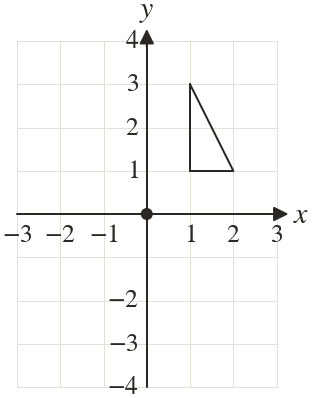
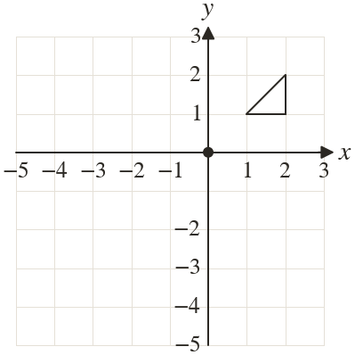

Westonbirt Maths · Transformations
Fractional and Negative Enlargements
Name: ______________________ Date: ____________
1
Enlarge the triangle by scale factor centre

2
Enlarge the triangle by scale factor centre

3
Sam enlarges the point by scale factor centre and gets What is his mistake?
4
Enlarge the point by scale factor centre
5
Which single transformation is the same as an enlargement by scale factor ?
Ext
Enlarge the point by scale factor centre